Effective Data Communication With {ggplot2}
Part II - Putting theory into practice
Renata Diaz
2024-06-13
Code-along script
Learning Objectives
- Implement principles of effective design using {ggplot}. Including:
- Maximize data:ink ratio using themes and facets
- Customize marks and channels using geoms and aes(thetics).
- Use helper tools including
cols4allandesquisseto make thoughtful visualization choices. - Work through an example as a group.
Maximizing data:ink ratio
The {ggplot2} default
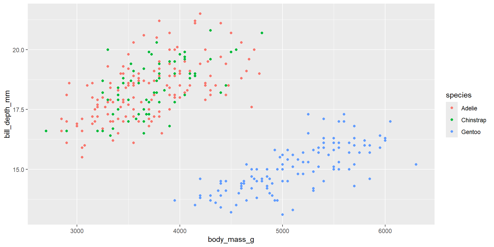{theme_*}
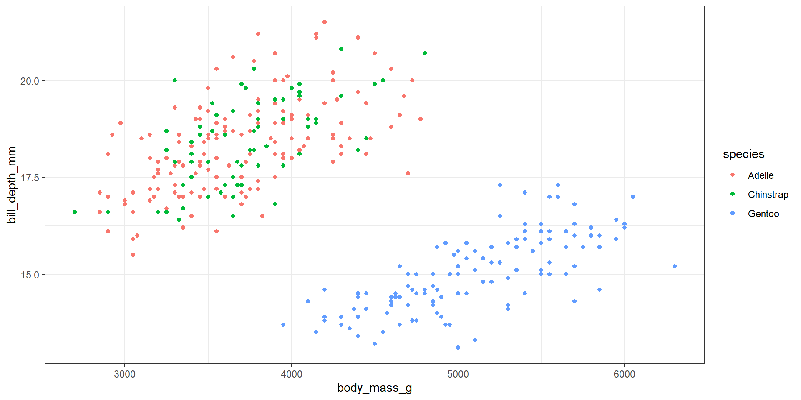{theme_*}
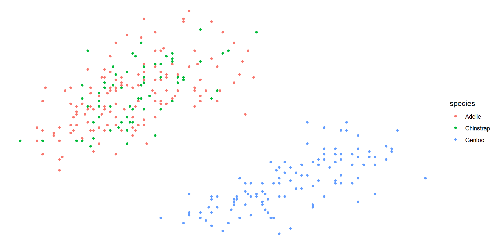{theme_*}
For a complete list of preset themes:
{theme_*}
Important
theme_bw() and theme_minimal can remove a lot of unnecessary ink with one fell swoop.
Use theme_set(theme_bw()) outside your plot code to set the theme for a whole script or notebook.
Modify a theme
- The preset themes either leave unnecessary ink, or remove necessary information.
- The
theme()function allows you to modify individual elements of a theme - The
themeoptions are vast. We’ll break it down.
Anatomy of theme
theme( <part of the plot> = <element_*(element_options)>)- Parts of the plot: axis, legend, panel, plot, strip.
- Elements: element_blank, element_text, element_line, element_rect.
- You can modify all lines/rectangles at once using
theme(line = element_line()), etc. - See the rendered documentation to help you figure out how to change specific elements.
Remove the background panel

Re-add grid lines
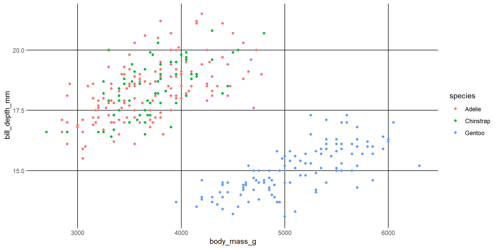Hierarchichal modifications
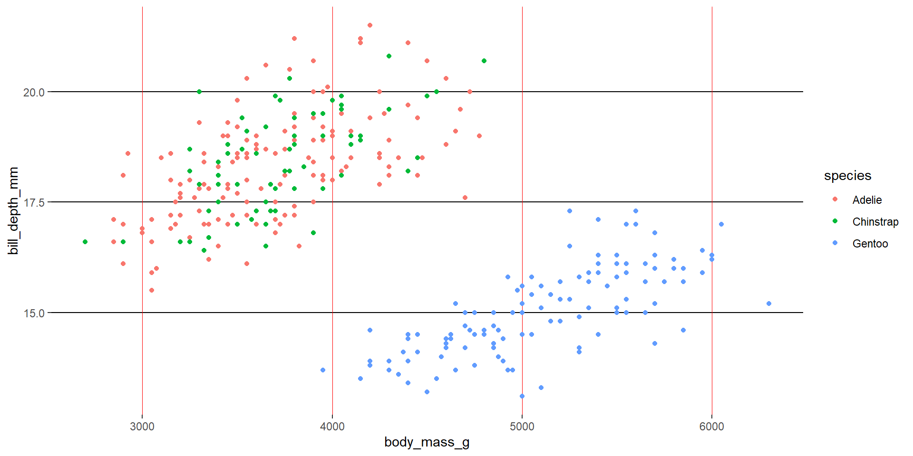Maximizing use of space
facet_wrap
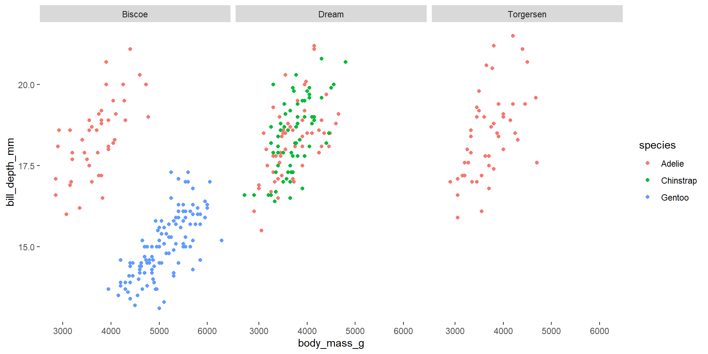facet_wrap
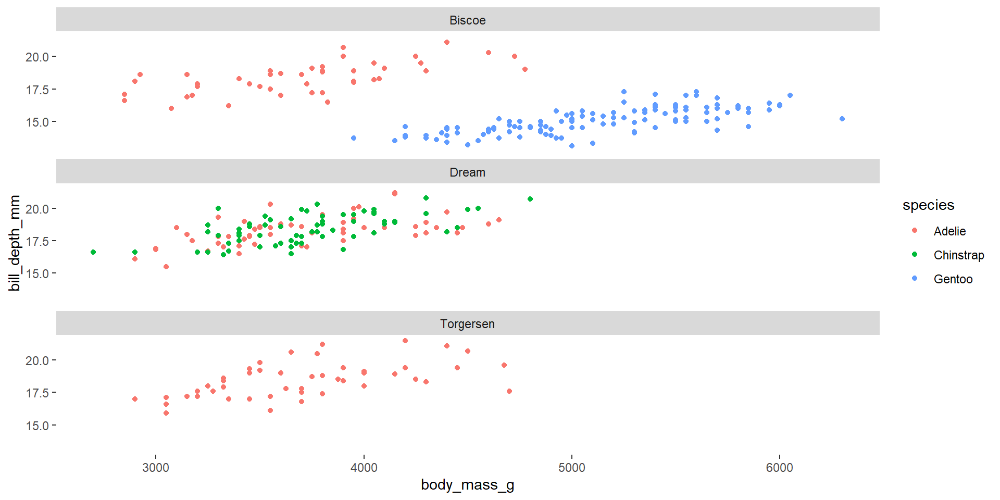facet_grid
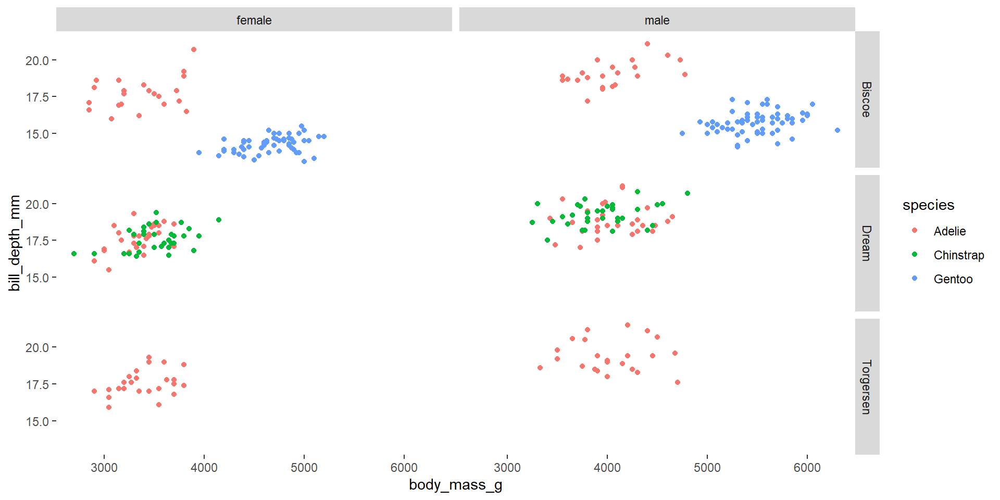Modify facet label placement
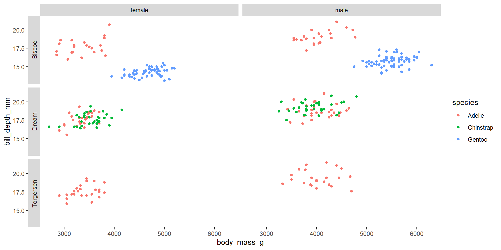Modify facet scales
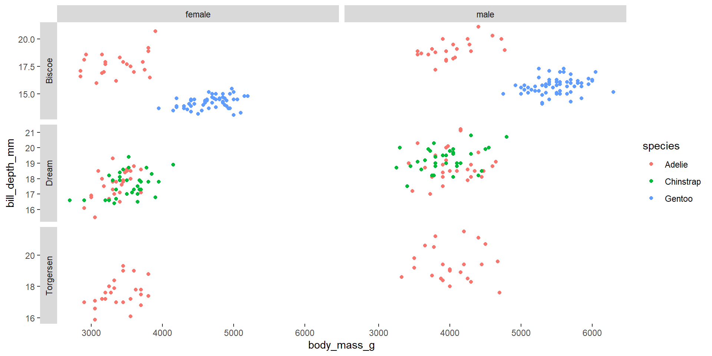Modify facet scales
Important
Use judiciously!
Modify facet strip options
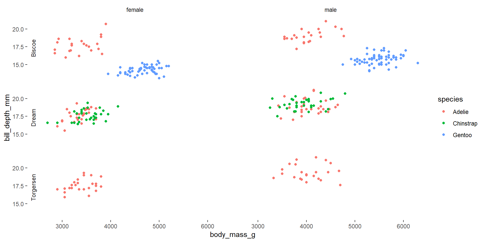Move the legend
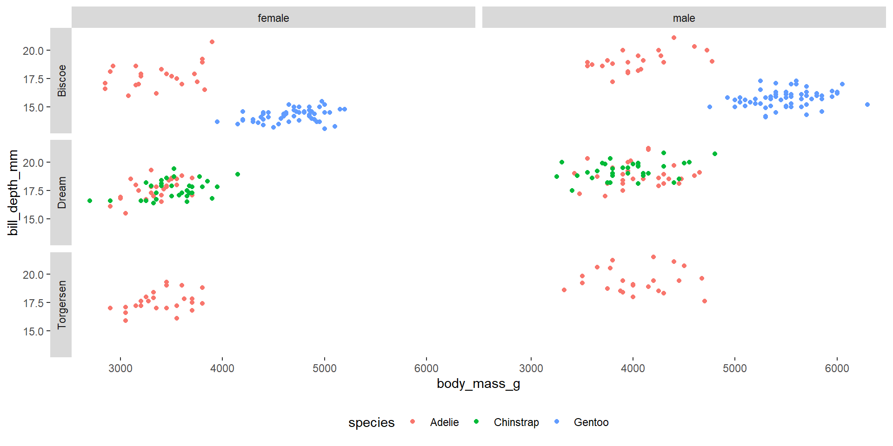Marks and channels
- Marks correspond to
geomsgeom_point, geom_line, geom_col, ...
- We map marks to data using
aes(aesthetics):xandyfor positioncolorandfillfor color scale- Discrete or continuous
alphafor opacitysizefor size
- Aesthetics can be set manually, if not mapped to data.
Counterintuitive marks and channels
Size is much worse than position for showing continuous data!
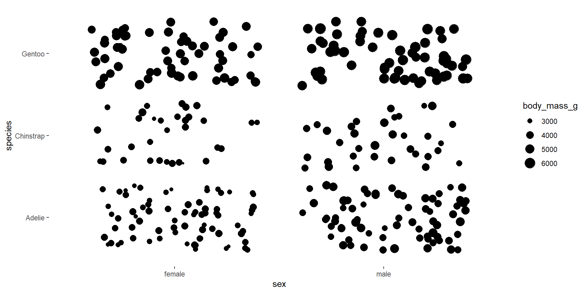Counterintuitive marks and channels
Size is much worse than position for showing continuous data!
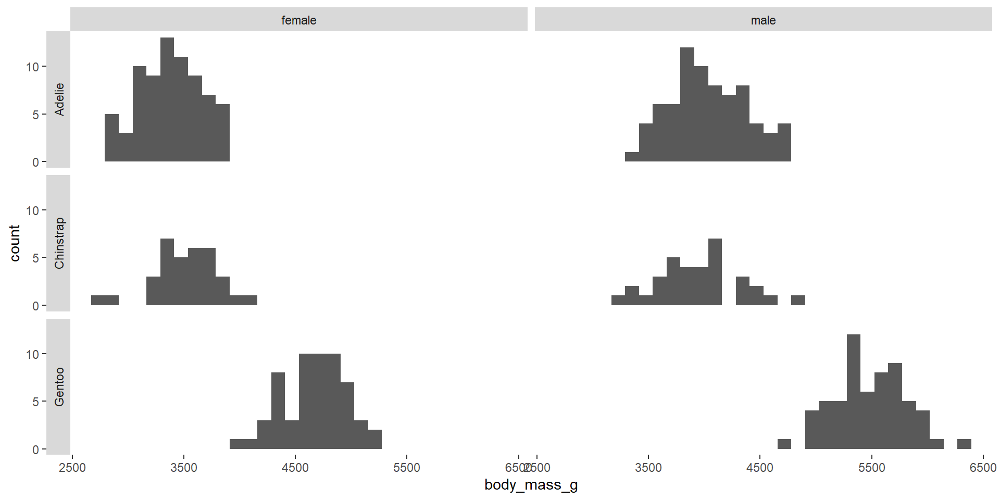Marks and channels: Options
Shape is less effective than color for differentiating categories!
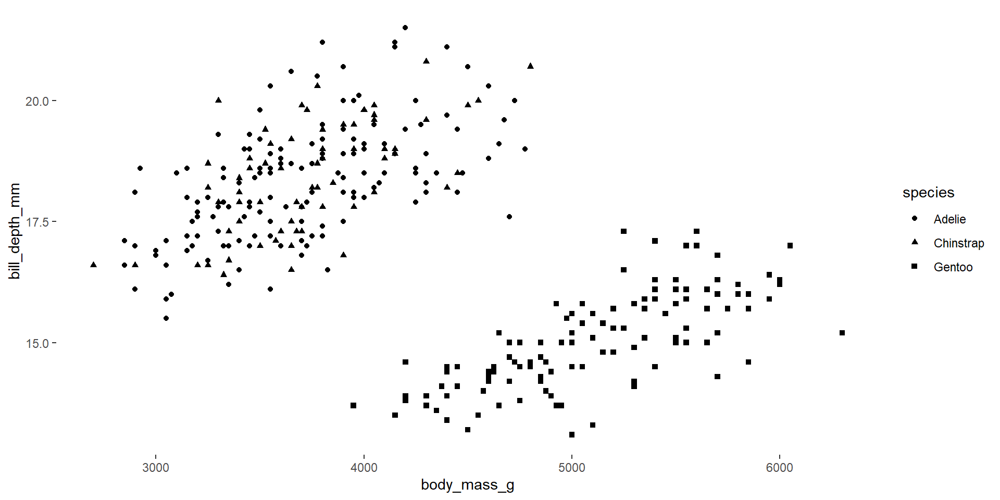Marks and channels: Options
Shape is less effective than color for differentiating categories!
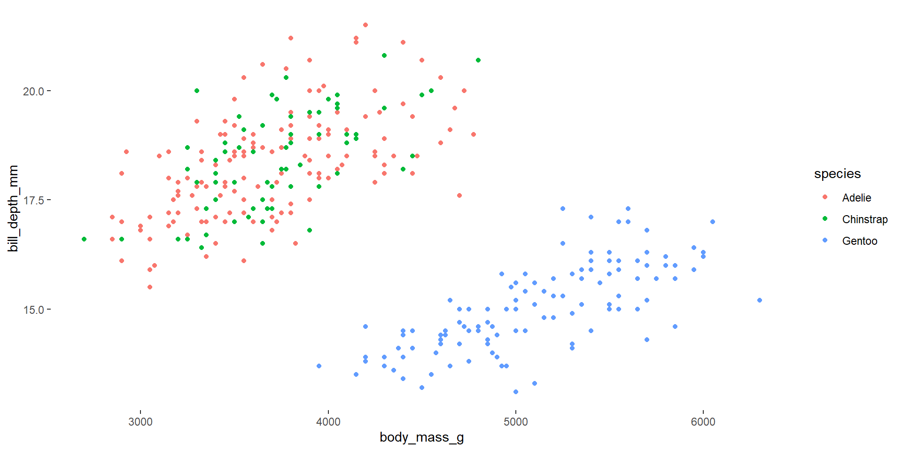Effective color scales
- There are multitudes of color palettes available for R.
- Color palettes can be sequential, categorical, diverging, or bivariate.
- Not all color palettes will be equally accessible to all viewers.
- Cols4All helps you explore color palettes and find one to meet your needs.
cols4all
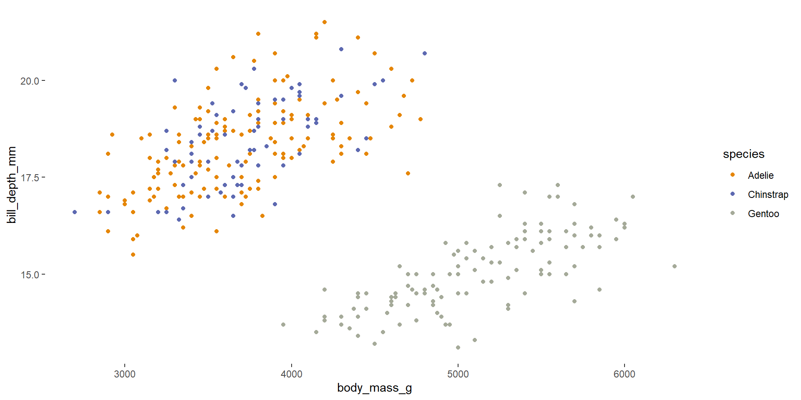A data-to-viz helper: Esquisse
esquisseis a ggplot2 extension for exploring data-viz pairings- Stay tuned for session 3 for more on extensions!
Esquisse demo
Let’s put it together
- Take a look at the “Measles” data table here.
- Let’s think through a visualization we could make of these data. Ask:
- Which data variables will tell a story? What types of data are they?
- Which chart type(s) would be appropriate for these data types?
- What marks and channels shall we use?
- What additional design decisions could we make to improve the graphic?
Resources
- ggplot2 documentation
- cols4all
- esquisse
- CCT Data Science drop-in hours (Tuesdays 9-10am)
- Data Science Incubator